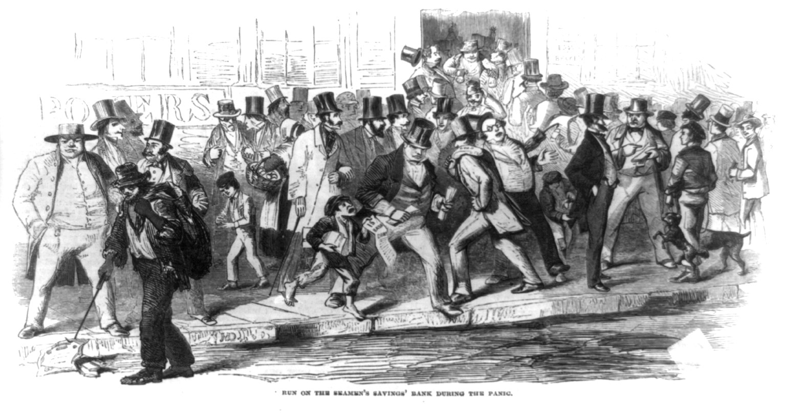
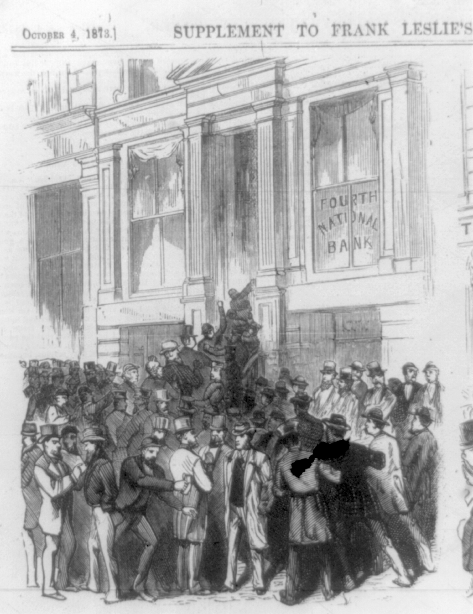
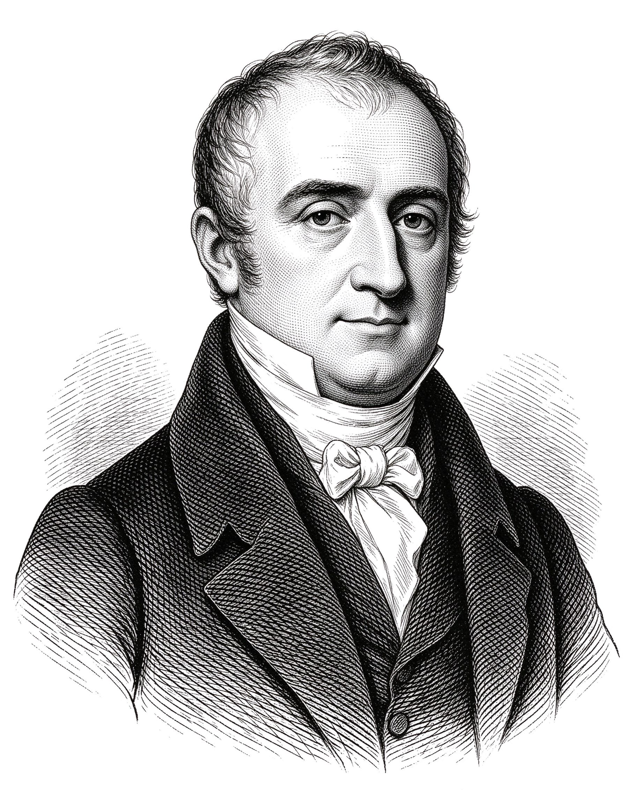
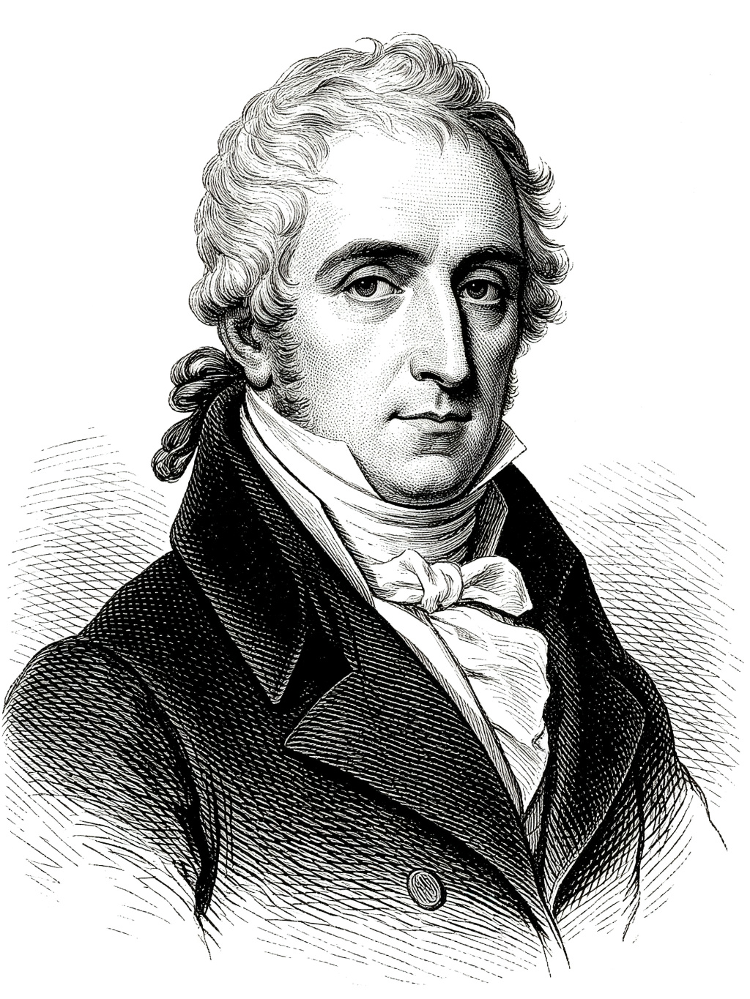
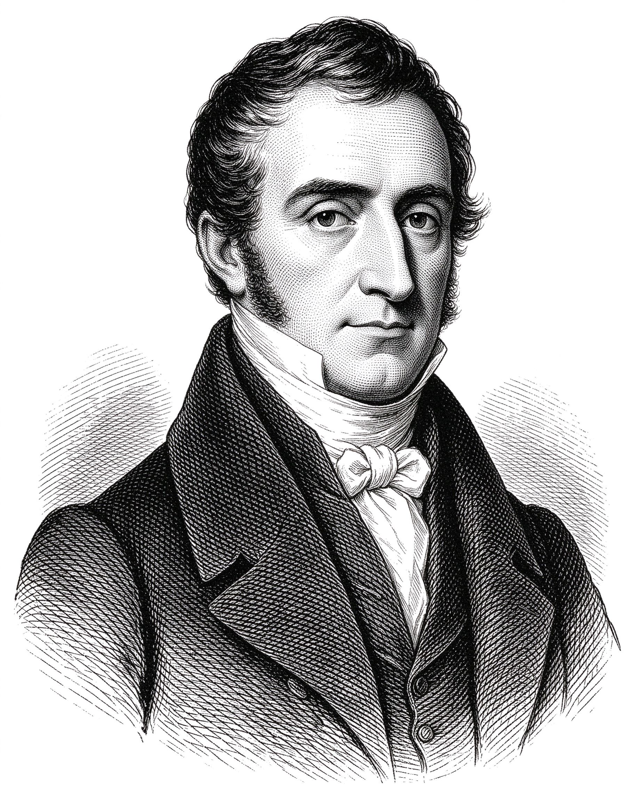
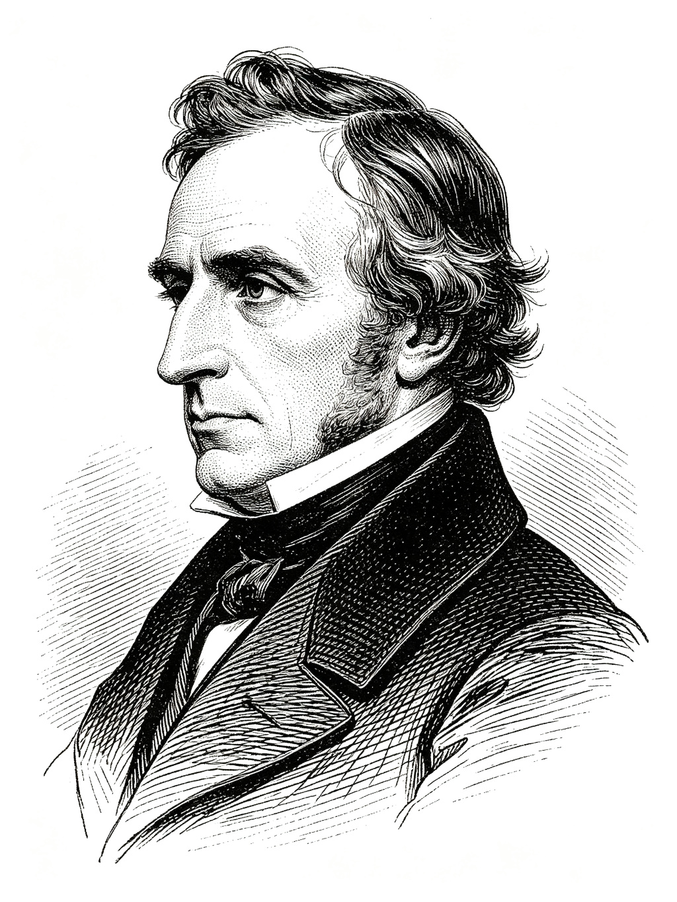
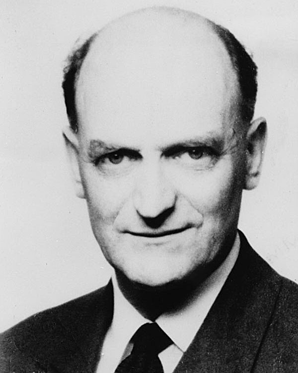
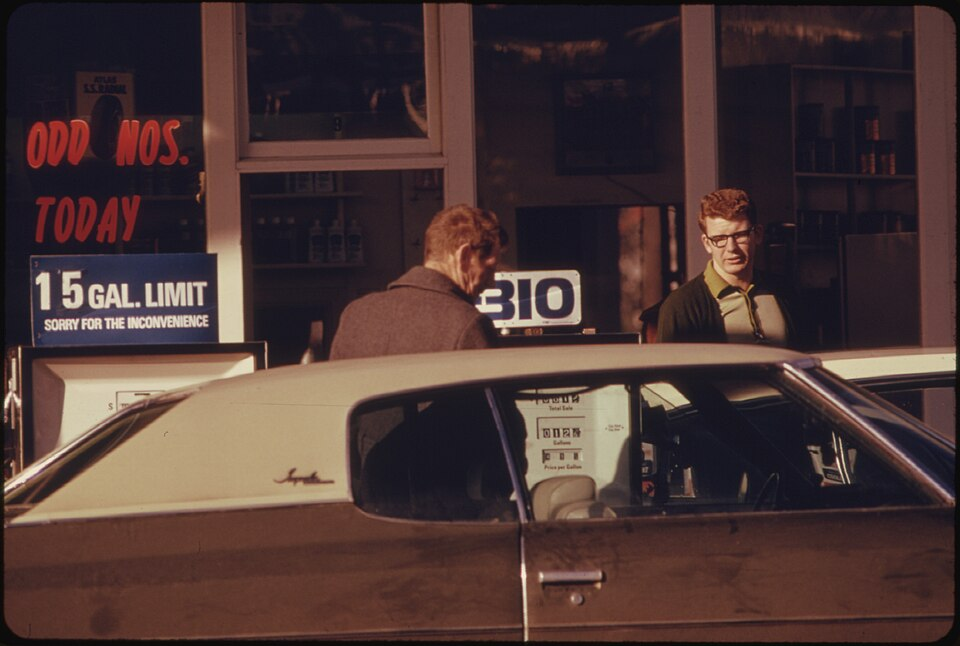
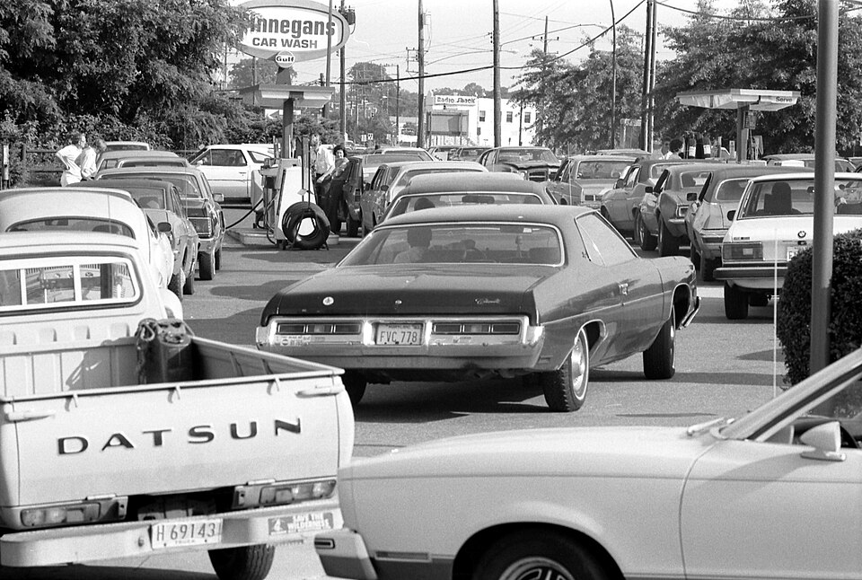

From the General Theory to the 2026 Nobel —
and the telling that says most of this story never happened
How an empirical scatter became a policy menu, broke, and was rebuilt
This is not a lesson about shifting one curve. The short-run model lives in Part 1. Here we follow something stranger: how a plotted line shaped what economists believed governments could do, how that belief shattered in the 1970s, and how the profession rebuilt itself around it.
Scroll through, and the curve in the margin of each era moves with the story. Two readings of the 1970s will be waiting at the end.
The 19th-century economy swung violently — the classical economists said it would self-correct

Run on the Seamen’s Savings Bank during the Panic of 1857. Booms, manias and bank runs were a regular feature of the 19th-century order.

Run on the Fourth National Bank, October 1873.
The panic of 1873 opened a long, grinding depression. Factories shut, wages fell, and the unemployed stayed idle for years — long after the bank run itself was over.
The gap between the promise of self-correction and the lived experience of the slump would only widen.
The classical economists worked in the laissez-faire tradition. Markets were competitive, prices and wages were flexible, and Say’s Law held that supply creates its own demand: everything produced also generates the income to buy it.
A recession, then, could only be temporary — a friction that falling wages and prices would soon erase. The economy returned to full employment on its own; no permanent trade-off between jobs and prices was even needed.
The long run was not a problem but the cure: given time, wages and prices adjust, excess inventories sell, and the unemployed are rehired. The prescription was patience and free markets, not spending.
Flexible prices & wages clear every market. A slump is a disequilibrium that self-corrects. Best policy: let it do.
Once wages and prices have fully adjusted, the economy returns to full employment on its own. A downturn is a temporary cost of waiting.
Keep markets free and the budget balanced; do not interfere. Confidence, and the demand that follows, will return of its own accord.




First the Depression came; then he built the case for fiscal policy
Dorothea Lange, Migrant Mother — a pea-picker family of seven stranded in the Depression.
From 1929 to 1933 U.S. output fell by roughly a third, prices and wages dropped, and by 1933 about a quarter of the workforce was idle. Thousands of banks failed. The classical correction never arrived.
Years passed and still the economy did not return to full employment. A theory built on “wait for the long run” had nothing to say.
Men queue for meals at St Peter’s Mission breadline. Even those willing to work at the going wage could not find a job — demand failure, not an unwillingness to work.
As the Depression dragged on, different regimes answered the same question — what to do when the market fails — in radically different ways.
Roosevelt took office in 1933 with a quarter of the workforce idle and banks shuttered. He did not abolish the market — he restored demand and rebuilt trust within democratic capitalism.
Relief and public works: the CCC hired roughly 3 million young men; the WPA gave work to about 8.5 million people — roads, schools, dams, and art; the TVA electrified a whole region.
Reform and a safety net: a bank holiday and deposit insurance (FDIC), the SEC to police securities, Glass–Steagall, and from 1935 Social Security, unemployment insurance and a minimum wage.
Keynes offered a middle road inside democratic capitalism: keep markets and democracy, but let the state manage aggregate demand. After 1945, that was the road the West took.
Keynes did not deny that the economy self-corrects in the long run. His point was brutal: it arrives too slowly to help people. “Economists set themselves too easy, too useless a task,” he wrote, “if in tempestuous seasons they can only tell us that when the storm is past the ocean is flat again.”
The General Theory of Employment, Interest and Money gave the field effective demand, an under-employment equilibrium, and a role for fiscal policy. When demand collapses, the economy can settle with millions idle.
Wages and prices are set by bargaining and history. The price level is largely an outcome of the industrial system — not a dial.
With idle resources, raising aggregate demand raises employment. But this is not a stable trade-off with inflation.
Milton Friedman later said the supposed trade-off “filled a gap in Keynes’s theoretical structure” — a gap Keynes had deliberately left open.

He plotted a loose correlation with no theory behind it
Keynes had left the link between jobs and prices as a loose, unstable aside — the gap he “deliberately left open.” Two decades later, an engineer turned economist tried to draw that link straight out of the data.
In Economica (November 1958), Phillips plotted the rate of change of money wages — not prices, not inflation — against unemployment in Britain, 1861–1957.
He fitted a curve to 1861–1913. The post-1948 points fell to the right of it. Rather than claim a broken trade-off, he blamed time-lags and re-plotted unemployment lagged seven months, which pulled the points back onto the curve. He called the whole thing “a very crude attempt” — and said it was “just done in a weekend.”
Phelps (1967) and Friedman (1968) put expectations into the curve
The warning printed on the menu’s next page — that the trade-off would deform in the long run as expectations adjusted — was about to be turned into a formal model.
Phelps, in 1967, insisted the Phillips curve must be written in real terms: bargainers care about the real wage, so expected inflation belongs in the curve. Friedman, in his 1968 presidential address, delivered the verdict that became famous.
Inflation pushes unemployment below normal only when it is unexpected. Once people expect it, the short-run curve shifts up and unemployment returns to the natural rate — the rate “ground out by the Walrasian system of general equilibrium equations.”
Try to hold unemployment below u*, and the extra surprise has to grow every year. What you buy is not jobs — it is accelerating inflation.
Was it the oil, or was it policy? The evidence points to both — differently
Phelps and Friedman had delivered a prediction: keep pushing for jobs below the natural rate and you buy accelerating inflation, not employment. The 1970s appeared to prove it — but who, or what, was to blame became a fight.
An oil shock shifts SRAS left: output falls and prices rise, together. But a supply shock is one-off — it changes the price level once, it does not explain a decade of rising inflation.
Every rise in unemployment was met with more easing. Expected inflation ratcheted up, the short-run curve shifted again and again, and bad years became a lost decade.
Oil was the trigger. The persistent part was loose money and unanchored expectations. The data give the game away.

Petrol queues and rationing after the OPEC embargo; oil roughly quadrupled.

A second shock; oil doubled again and U.S. inflation reached 13.5% in 1980.
The two oil jumps are brief relative-price changes and partly reverse. So why did a one-off trigger produce a decade of inflation?
Because the shock was passed round in a circle: expected inflation rose, indexed wages chased prices (second-round effects), and the Fed kept real interest rates negative — so a level jump became sustained inflation. Remove the anchor and the shock keeps propagating.
“Rules rather than discretion”
If the fitted line could shift and break, Lucas insisted, it was never a fixed law to steer by — merely a pattern estimated under one particular policy regime.
Building on John Muth’s (1961) idea of rational expectations, Lucas published Econometric Policy Evaluation: A Critique in 1976.
The 1961–69 Phillips curve was estimated under one policy regime. Change the rule — and people change their expectations, so the estimated relationship shifts. You cannot use it to choose policy.
The new classical school — Lucas, Sargent, Barro, Prescott — drew the sharp conclusion: if a policy rule is anticipated, it moves nothing; only a surprise can change real output. Stabilisation by fine-tuning was an illusion.
Ricardo (1817): £20m paid now, £1m a year forever, or £1.2m for 45 years are economically the same — though he doubted taxpayers would see it that way.
Barro (1974, “Are Government Bonds Net Wealth?”): a debt-financed tax cut is a future tax, not wealth — so it need not move demand.
The label “Ricardian equivalence” was actually coined by Buchanan in a 1976 comment — and Buchanan was a critic of it.
Related — but not the same thing
A research program — a set of models
A policy movement — a set of laws
What it is: the baseline toolkit of economics — marginal utility, rational maximising agents, supply and demand clearing in equilibrium. Jevons, Menger, Walras, then Marshall’s synthesis.
A way of thinking, not a macro policy: it describes how markets allocate resources. It predates the Keynesian debate altogether.
What it is: it takes that neoclassical toolkit — optimising agents, continuous market clearing — and applies it to the whole economy, adding rational expectations. Lucas, Sargent, Barro; later real business cycles.
Why “new”: it revives the old classical claim that markets clear, at the macro level, to reject the Keynesian menu.
The names sit a century apart: neoclassical is the micro foundation; new classical is the 1970s macro movement built upon it.
They don’t map one-to-one. Hayek is a neoliberal thinker, but he is not a new-classical macroeconomist; many real-business-cycle theorists never advised a government. One is a way of building models; the other is a way of running the state.
But they reinforced each other. Both distrust the state and trust markets; the new-classical climate lent the political turn its academic credibility, and the political turn gave the ideas a route to power.
David Harvey calls Chile under Pinochet (1973) the first neoliberal laboratory — the Chicago Boys privatised and deregulated under authoritarian rule. China after 1978 was a different, state-led turn to markets. Both show the same ideas landing far from the Washington–London axis.
Paul Volcker breaks inflation; rules and targets pin expectations down
If expectations do the shifting, the game is to change the expectations. The Federal Reserve under Paul Volcker demonstrated that a central bank willing to endure the pain could break the cycle — then a whole architecture grew up to lock that credibility in.
The central banker who made the recession deliberately.
Volcker let the federal funds rate rise above 19%, and the 1981–82 recession drove unemployment to 10.8%. It was deliberately painful.
It worked because the public eventually believed the Fed would not flinch. Once expected inflation fell, the short-run curve shifted down and the long-sought anchor was restored.
Only a central bank people believe can change expected inflation — the disinflation was costly because belief had to be earned.
Calvo and Taylor gave the short-run curve a micro-foundation: firms set prices at different times, so a short-run trade-off remains.
Inflation targets (NZ 1990) and independent central banks pin down expected inflation directly — rules over discretion.
On the fiscal side, the same logic: deficits are future taxes. This wave became a pillar of the late-century consensus.
Hall & Woodford — “for microeconomic foundations of macroeconomic stabilisation”
The rebuild worked in practice — but the new consensus still had to be made rigorous in theory. The 2026 prize honoured the microfoundations that let the short-run trade-off survive, rebuilt on forward-looking agents.
Consumption as an intertemporal choice (1978). Households smooth spending, so a known future income change moves today’s spending before the money arrives.
Prices are written down in advance, so what the central bank says about the future is already policy today (Interest and Prices, 2003).
Expectations move the Phillips curve, yes — but forward-looking households and firms, together with pre-set prices, still leave a real short-run role for stabilisation. The free-market counter-revolution did not erase Keynes; it rebuilt him.
The official account — and a historian who says it is invented
That sentence is the textbook story in a line. The lesson now turns from what the models say to whether the history behind them is true.
The 1973 OPEC embargo and the 1979 revolution — the petrol queues and the price shocks above — are sidelined in the standard textbook telling, but sit at the centre of Forder’s archive reading.
That policy had been run off a stable curve, that the 1970s exposed it, and that the rebuild was a lesson learned. It says nothing about who believed what — it is a summary of the models, not a reading of the archive.
The standard story is “entirely inauthentic. It is made up.”
| The story as told | What the record shows |
|---|---|
| Phillips discovered a striking trade-off | It was not new in 1958 |
| Samuelson–Solow sold it as a menu | They hardly propounded a trade-off at all |
| Governments inflated to buy jobs | It was rarely mentioned in policy discussion |
| Friedman & Phelps added expectations | Expectations were commonplace before 1968 |
| The 1970s exposed naïve Keynesians | Oil and commodity prices are overlooked |
Why it matters: this is the story that discredited the Keynesians of the 1970s — and with them the case for expansionary policy.
Before 1958, aggregate supply was drawn as an L — flat, then rising, then a wall
The revisionist case has a technical side too. Before Phillips, Forder notes, wages and prices were treated as exogenous: “no fundamental reason that full employment in and of itself should generate a change in the price level.” Aggregate supply was drawn as an L, yielding three distinct branches — only one of which is a Phillips trade-off. Drag the stimulus across.
Stimulus raises output and jobs; inflation does not move at all.
More output comes with some inflation: the short-run curve you already know.
More stimulus buys inflation with no extra output.
Summers (1991), from the other side: the L “was falsified by the coincidence of inflation and less than full employment in the late 1940s and 1950s.”
Discretion, then rules, then a new synthesis
The same pendulum that runs through the whole history of economic thought moves here too: confidence in discretion and intervention at mid-century, a hard swing back to rules and the market after the 1970s, and the 2026 prize resting near the middle — a new Keynesian synthesis built on forward-looking microfoundations.
The same decade carries two readings
The 1961–69 relation; the break after 1970; stagflation; the vertical LRPC where π = πe; the Lucas critique; the microfoundations; the 2026 prize.
Who believed what, who acted on it — and whether the break was a profession’s mistake or a story told afterwards.
The same events carry both readings — which one you were taught is itself evidence about who won.
The vertical LRPC is still the right device — and the 1960s line really had no long run in it at all.
Models come with a history attached. Ask who read the archives.
The standard account is a usable history — it organises the models. That is not the same thing as a verified history.
The inflation surge of 2021–22, supply shocks, and the return of fiscal activism reopened the question. The pendulum keeps moving; it never settles at either extreme.
The prize began in 1969 and is never awarded posthumously.
| Nobel | Laureate | Why they won | Why this lesson mentions them |
|---|---|---|---|
| 1970 | Paul A. Samuelson | Static & dynamic economic theory | The 1960 paper that made the curve a “menu” |
| 1976 | Milton Friedman | Consumption, monetary history, stabilisation | 1968: expectations and the natural rate |
| 1986 | James M. Buchanan | The contractual basis of economic decisions | He named “Ricardian equivalence” (1976) — as a critic |
| 1987 | Robert M. Solow | The theory of economic growth | The other half of the 1960 paper |
| 1995 | Robert E. Lucas, Jr. | Rational expectations | 1976: an estimated relation is not structural |
| 2004 | Edward C. Prescott | Time consistency; business cycles | New classical: rules, not discretion |
| 2006 | Edmund S. Phelps | Intertemporal trade-offs in macro policy | 1967: expectations, before Friedman |
| 2011 | Thomas J. Sargent | Cause and effect in the macroeconomy | New classical: anticipated policy moves nothing |
| 2026 | Hall & Woodford | Microeconomic foundations of stabilisation | Where the lesson ends: the rebuild gets its foundations |
Keynes (d. 1946) and Phillips (d. 1975) — the prize began in 1969 and is never posthumous; Forder, Volcker and Muth never won it either. The curve is named after a man who never received the prize.
Market and state — every school sits somewhere between them
Hover or tap a school for its people, traits and claims
Classical at the market pillar; Marx and early socialism at the state pillar; Keynes swings toward the state; monetarism and new classical swing back; the new Keynesian consensus rests between the two. The pendulum and the pillars are the same picture.
A curve is easy to draw. Knowing who believed it — and why you were told they did — is the harder part.